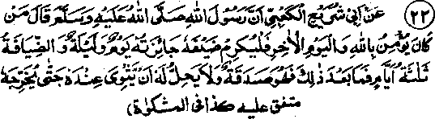

Chapter One · Section (b): Ahadith on the virtues of spending for the cause of Allah
16. Special food for a guest only for a day

Hadith 22
Rasulullah Sallallaho alaihe wasallam has said that whoever has faith in Allah Ta'ala and the ‘Akhirah’ needs to honour his guest; a guest is entitled to special treatment for a day and night, while hospitality may be extended for three days and nights; it is not proper for the guest to stay too long, as it may cause hardship to the host. (Mishkaat)
Note: This Hadith lays down two points of etiquette, one each for the host and the guest. The courtesy to be shown by the host is that, if he believes in Allah Ta'ala and the Akhirah as has been mentioned in the previous Hadith, he must honour his guest, which is to treat him broadmindedly and talk to him politely. One Hadith says that a person should accompany his gue/st upto the door. Uqbah Radhiallaho anho has quoted Rasulullah Sallallaho alaihe wasallam as saying that whoever does not show hospitality is devoid of virtue. Samorah Radhiallaho anho says Rasulullah Sallallaho alaihe wasallam used to entertain a guest with a feast. Someone saw Ali Radhiallaho anho weeping and asked him the cause. The reply was that seven days had passed without his having entertained a guest and he feared lest Allah Ta'ala might intend to dishonour him.
Rasulullah Sallallaho alaihe wasallam ordered that a guest be treated well and given special treatment for a day and night. The latter point has been explained differently by Ulama. Imaam Maalik Rahmatullah alaihe says that he may be shown special favour such as presents or special food for one day and night, and normal food (of the family) thereafter. Another interpretation is that the special day is in addition to three days ordered by Rasulullah Sallallaho alaihe wasallam, which would give the guest a right to stay for four days. Another version is that the special day is included in the three days. There is yet another interpretation: that a day’s special treatment means provision of food for the journey if the guest cannot stay for three days. Another interpretation is that special treatment means food for the journey on the fourth day, after he has spent three days as a guest. Still another interpretation, is that special treatment is for a person who breaks his journey, for a day, unlike a person who comes for a regular visit and has a right to stay for three days. The purpose of all these interpretations is to bring out fully the way to honour a guest by giving him especially good meals for one day and food for the journey, particularly on routes where food may not be available.
The other point of etiquette mentioned in the above Hadith concerns the guest; that he should not prolong his stay so much that it causes hardship and inconvenience to the host. Another Hadith puts it that the stay should not be lengthened to the extent that the host may become sinful, that is, he may start back-biting about the guest or behave in a manner which may cause harassment to the guest, or he may begin to mistrust the guest in some way.
Such behaviour would make the host sinful, but this state of affairs would arise when there is no pressure for longer stay from the host, or when the guest does not realise that his stay is a burden to the host.
Someone asked Rasulullah Sallallaho alaihe wasallam about the things that would be the cause of the host’s sin. The reply was to stay so long that the host is left with nothing to feed the guest. Hafiz Rahmatullah alaihe says that Salman Radhiallaho anho had that type of experience with his guest, which has been quoted by Imaam Ghazali Rahmatullah alaihe, as narrated by Abu Waail Radhiallaho anho who with a friend of his went to visit Salman Radhiallaho anho; the latter placed before them barley bread and some half pounded salt. His friend remarked if there was Satter (a type of mint), served with this bread, it would taste delicious. Salman Radhiallaho anho went and pawned his metallic water pot to purchase satter for the guest. After finishing the meal, that guest said:
"All praises are for Allah Ta'ala who has enabled us to be satisfied with the food served".
On that Salman Radhiallaho anho said, "Had you been satisfied with what was served, my water pot would not have been pawned." The lesson is to avoid putting a demand on the host which would place him in difficulties. Also, it is highly undesirable to mention one’s requirements when staying at someone else’s home; whatever is presented as a meal should be eaten thankfully in good humour. Demands from guests very often put the host in difficulties. However, if there are indications that the host will be pleased to receive the guest’s demands, particularly when the latter enjoys an affectionate regard and the host would love to make a sacrifice, one may order anything he desires. Imaam Shafe'i Rahmatullah alaihe was once a guest of Zafrani Rahmatullah alaihe in Baghdad. For the sake of the Imaam, the latter used to write the daily menu and send it through his slave-girl. One day, Imaam Shafe'i Rahmatullah alaihe took the menu from the slave-girl and added an item of his own taste. When Zafrani saw that item being served, he asked the slavegirl why she had prepared a thing which he had not mentioned in the menu? She brought the written menu to him and showed the addition made by the Imaam. On seeing the addition written by the Imaam himself, he was beside himself with joy and set free the slave-girl in that happy mood. In the case of such a host and the same kind of guest, a demand becomes a source of pleasure for both.